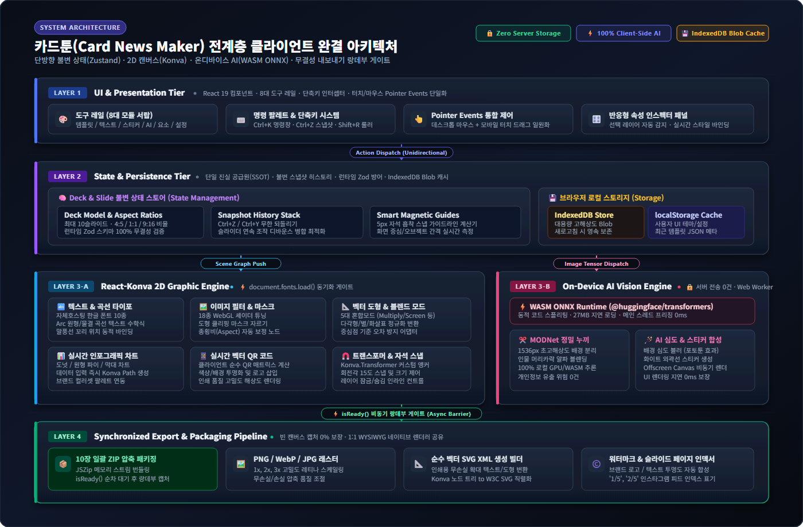

🎨 카드툰 (Card News Maker) 프로젝트 상세 문서
서버 통신 0건의 프라이버시를 보장하며, 브라우저 단에서 WebAssembly AI 누끼 및 인스타그램 10장 캐러셀 덱 일괄 편집·ZIP 출력을 지원하는 2D 캔버스 그래픽 웹 에디터입니다.
1. 프로젝트 개요 & 핵심 가치
| 항목 | 내용 |
|---|---|
| 프로젝트명 | 카드툰 (Card News Maker) |
| 형태 | 단일 페이지 웹 애플리케이션 (SPA) / PWA 지원 |
| 핵심 목표 | 별도의 백엔드 서버 없이, 브라우저 단에서 고해상도 카드뉴스와 포토툰·밈을 전문 그래픽 툴처럼 빠르고 안전하게 제작·내보내기 |
| 배포 주소 | https://card-news-maker-beige.vercel.app/ |
| 핵심 지표 |
• 서버 전송 0건: 업로드 이미지 및 AI 연산 100% 클라이언트 로컬 처리 • 검증 템플릿 42종: 인스타그램 캐러셀, 공지, 밈 등 원클릭 프리셋 • 캐러셀 10장 덱 지원: 다중 슬라이드 편집 및 일괄 ZIP 다운로드 • 자체 호스팅 폰트 10종: Google Fonts 외부 요청을 제거하여 엄격한 CSP 및 제3자 트래킹 차단 |
2. 다양한 실전 템플릿 갤러리 (8종 실물 쇼케이스)
다양한 목적(정보 전달 캐러셀, 감성 인용구, 트렌드 뉴스, 커머스 할인 배너, 후기 포토툰, 프로필 소개, SNS 밈)에 맞춤 설계된 실제 완성 캔버스들입니다.
| 템플릿 구분 | 실제 캔버스 캡처 | 디자인 및 스타일링 특징 |
|---|---|---|
| 캐러셀 6장 세트 (라이트) |  |
화사한 화이트/민트 톤과 가독성 높은 폰트 위주의 6장 정보성 덱 |
| 캐러셀 5장 세트 (파스텔) |  |
라벤더·코튼캔디 파스텔 컬러의 감성적인 라이프스타일 카드뉴스 |
| 오로라 인용구 |  |
신비로운 오로라 그라디언트와 큰따옴표 타이포그래피 인스타 감성 컷 |
| 글래스 트렌드 뉴스 |  |
반투명 블러 유리 질감의 글래스모피즘 헤드라인 템플릿 |
| 네온 SALE 프로모션 |  |
시선을 끄는 옐로우/네온 컬러의 할인 및 이벤트 커머스 배너 |
| 후기 말풍선 (포토툰) |  |
별점 5개와 대사 말풍선으로 고객 반응을 전달하는 포토툰 레이아웃 |
| 자기소개 프로필 카드 |  |
실사 사진을 원형으로 마스킹 크롭하여 나를 브랜딩하는 포토툰 카드 |
| 티어표 SNS 밈 |  |
S/A/B/C 등급별로 요소를 배치하여 참여와 댓글을 유도하는 밈 그리드 |
3. 포토툰(Photo-toon) 벤치마킹 및 특화 설계
Canva, 망고보드, 미리캔버스, 클립스튜디오 등 시장 레퍼런스를 정밀 분석하여 포토툰 제작에 최적화된 6대 설계를 적용했습니다.
| 포토툰 핵심 요소 | 레퍼런스 분석 (Canva/망고보드/클립스튜디오) | 카드툰 (Card News Maker) 적용 구현 |
|---|---|---|
| 화면 비율 규격 | 모바일 피드 화면 점유율이 가장 높은 4:5(1080×1350)가 표준 대세 | 4:5 인스타 피드 규격 기본 제공 및 1:1, 9:16 원클릭 전환 |
| 말풍선 & 시선 흐름 | 한국어 독서 습관(좌→우, 상→하 Z패턴)과 복잡한 배경 분리를 위한 흰색 불투명 바탕+외곽선 | 자막/말풍선 프리셋: 불투명 배경 + 테두리 스트로크 + 꼬리 위치 회전 지원 |
| 인물 사진 누끼 합성 | 실제 사진 인물/반려동물을 컷 만화 배경에 얹는 포토툰 필수 작업 | 브라우저 온디바이스 AI(MODNet): 서버 전송 없이 1536px 인물 배경 즉시 제거 |
| 연속 스토리텔링 | 표지(훅) → 2~8컷 본문 전개 → 엔딩(CTA/팔로우 유도) 캐러셀 구조 | 10장 슬라이드 덱(Deck) 스트립: 슬라이드 추가/복제/순서 변경 및 일괄 ZIP 출력 |
| 감정 효과 스티커 | 대사 외의 감정 표현(ㅋㅋㅋ, 헐!, 느낌표, 반짝이, 땀방울, 당황선) | 24종 스티커 팩 & 내 스티커 보관함: 도형+텍스트 그룹 스티커 원클릭 배치 |
4. 시스템 아키텍처 다이어그램 & 계층별 설계 의도
UI 조작, 불변 상태 스토어, 캔버스 렌더러, 온디바이스 AI 엔진 및 비동기 내보내기 파이프라인의 유기적 단방향 데이터 흐름도입니다.


▲ 클릭하시면 전체화면 고해상도 라이트박스로 세부 텍스트를 선명하게 확인하실 수 있습니다.
4 계층별 아키텍처 역할 및 핵심 엔지니어링 전략
| 계층 (Layer) | 주요 모듈 및 기술 | 설계 의도 및 엔지니어링 성과 |
|---|---|---|
| Layer 1 UI & Dispatch |
React 19도구 레일 8대 모듈 Pointer Events 통합 제어 단축키 인터셉터 (Ctrl+K/Z) |
모바일 터치 환경과 데스크톱 마우스 입력을 Pointer Events로 단일화하여 장치 간 레이어 드래그 정렬 결함을 완전히 해소했습니다. 모든 UI 상호작용은 단방향 불변 액션으로 디스패치됩니다. |
| Layer 2 State & Storage |
Zustand 단일 진실 공급원순수 함수 불변 스냅샷 히스토리 Zod 런타임 스키마 방어IndexedDB Blob 캐시
|
인플레이스 객체 변형을 제거하여 Undo/Redo 스냅샷 무결성을 100% 보장하고, 슬라이더 연속 조작을 500ms 단위로 병합했습니다. 5MB 용량 한계의 localStorage 대신 IndexedDB를 도입하여 수십 MB 대용량 고해상도 이미지 덱을 안정적으로 영속화했습니다. |
| Layer 3-A Canvas 2D Engine |
React-Konva 10.3document.fonts.load() 동기화18종 WebGL 셰이더 필터 5px 자석 스냅 가이드라인 |
DOM 방식의 Reflow 성능 저하를 방지하기 위해 가상 씬 그래프를 구축하고 60FPS 하드웨어 가속 렌더링을 구현했습니다. 브라우저 캔버스의 웹폰트 로딩 누락 결함을 fontKey 비동기 동기화 게이트로 해결했습니다.
|
| Layer 3-B On-Device AI Engine |
@huggingface/transformersMODNet ONNX Runtime WASMOffscreen Web Worker 스레드 동적 코드 분할 (27MB 분리) |
서버 API 호출 비용(건당 10~50원)과 개인 사진 유출 위험을 0으로 차단한 100% 브라우저 로컬 AI 인물 배경 제거입니다. 메인 스레드 프리징을 방지하기 위해 Web Worker에서 구동되며, 초기 번들 최적화를 위해 동적 지연 로딩을 적용했습니다. |
| Layer 4 Synchronized Export |
isReady() 랑데부 게이트stage.toDataURL()JSZip 메모리 스트림 패키징SVG 순수 벡터 빌더 |
다중 슬라이드 일괄 캡처 시 비동기 이미지 로딩 지연으로 인해 발생하던 '빈 화면 저장' 레이스 컨디션을 isReady() 비동기 배리어로 원천 방지하여 결함률 0%를 달성했습니다.
|
💡 단일 Stage 파이프라인 기반 WYSIWYG 보장
미리보기 화면과 실제 내보내기 결과물이 서로 다른 렌더러(예: Headless Puppeteer 또는 DOM-to-Canvas 라이브러리)를 사용할 때 발생하는 폰트 크기 및 레이어 위치 왜곡 문제를 근본적으로 해결하기 위해, 화면 표시용과 내보내기용이 동일한 Konva Native Stage 파이프라인을 100% 공유하도록 설계했습니다.
5. 핵심 엔지니어링 문제 해결 (Troubleshooting 6선)
📌 Case 1. Konva 캔버스에서 한글 웹폰트가 누락되고 기본 폰트로 폴백되는 현상
- 문제: UI에서 '주아', '도현' 체를 선택했으나 캔버스 렌더링 시 Malgun Gothic으로 폴백됨.
- 원인: 브라우저의 Canvas API는 일반 HTML DOM과 달리 아직 화면에 그려지지 않은 웹폰트를 능동적으로 네트워크에서 가져오지 않음.
- 해결책: 텍스트 레이어가 참조하는 폰트를
document.fonts.load()로 명시적 프리로드하고, 준비 완료 시점에 캔버스 Stage의fontKey상태를 변경하여 강제 리렌더링 트리거.
📌 Case 2. 스냅샷 기반 Undo/Redo에서 이전 상태가 오염되는 현상
- 문제: 레이어 순서를 바꾼 뒤 Ctrl+Z를 누르면 이전 상태가 복원되지 않고 현재 상태와 섞여버림.
- 원인: 기존
handleMoveLayer함수가 레이어 객체의zIndex속성을 인플레이스(In-place mutation)로 수정하여, 히스토리 스택에 저장된 과거 스냅샷이 동일한 메모리 참조를 공유함. - 해결책:
reorderLayers를 비롯하여 모든 레이어 조작 로직을 스프레드 연산자 및 순수 함수 기반의 불변 업데이트(Immutable Update)로 전면 리팩토링.
📌 Case 3. 다중 슬라이드 일괄 내보내기 시 빈 이미지 저장 현상
- 문제: 5장 세트 템플릿을 ZIP으로 일괄 내보낼 때 2~4번 슬라이드의 이미지가 누락된 채 다운로드됨.
- 원인: 슬라이드를 스크립트로 빠르게 전환할 때, Konva Image 노드가 비동기로 이미지 엘리먼트를 로드하기 전에
stage.toDataURL()이 호출됨. - 해결책: 캔버스 컴포넌트에
isReady()프로미스를 선언하여 "현재 슬라이드에 포함된 이미지 노드 수 == 로드 완료된 엘리먼트 수" 조건을 충족할 때까지 대기 후 캡처하도록 랑데부(Rendezvous) 동기화 파이프라인 구축.
📌 Case 4. 모바일 터치 환경에서 레이어 드래그 순서 변경 불가
- 문제: 데스크톱에서는 정상 동작하던 레이어 패널 드래그 정렬이 태블릿/모바일 터치 환경에서 동작하지 않음.
- 원인: HTML5 표준 Drag & Drop API는 터치 스크린 이벤트를 발생시키지 않음.
- 해결책:
⋮⋮핸들에Pointer Events API를 적용하고touch-action: none을 선언하여 마우스와 터치 입력을 단일 파이프라인으로 일원화.
📌 Case 5. 도형 회전 및 리사이징 시 좌표계 오정렬 결함
- 문제: 원, 별 등의 도형을 추가한 후 크기를 조절하거나 회전하면 바운딩 박스와 실제 위치가 어긋남.
- 원인: Konva의 원/별 노드는 '도형의 중심'을 원점으로 사용하는 반면, 프로젝트 내부 데이터 모델은 '좌상단 바운딩 박스(x, y)'를 기준으로 함.
- 해결책: 노드 이동 시에는 변위(dx, dy)만 누적하고, 트랜스폼 리사이징 시에는 중심점 기준 좌표를 좌상단 좌표로 변환하는 수학적 정규화 어댑터 구현.
📌 Case 6. 새로고침 시 업로드 이미지 소실 및 localStorage 용량 초과
- 문제: 대용량 사진을 넣고 작업 중 브라우저 새로고침 시 이미지가 깨지고, localStorage 5MB 한계로 인해
QuotaExceededError발생. - 원인: 파일 업로드 시 생성된
blob:URL은 브라우저 세션이 종료되면 파기되며, 이를 data URL로 localStorage에 저장하면 수십 MB 용량을 감당할 수 없음. - 해결책: 비동기 IndexedDB 기반의 자동 저장소(
deckStore)를 구축하고, 저장 시점에 Blob을 data URL로 비동기 변환하여 저장 및 중복 캐싱 방지.
6. 보안 & 품질 관리 (Engineering Standards)
- 외부 통신 0건 & 엄격한 CSP:
vercel.json을 통해 엄격한 Content Security Policy 헤더 적용. 자체 호스팅 글꼴로 외부 폰트 서버 요청 완전 차단. - 방어적 Zod 스키마 검증: 손상되거나 비인가 블렌드 모드가 주입된 템플릿 JSON 로드 시 원자적으로 거부하여 기존 세션 보호.
- CI/CD 자동화: GitHub Actions를 통해 커밋마다 Oxlint 정적 분석, TypeScript 엄격 타입 검사, 오픈소스 라이선스 게이트 스크립트, Vitest 단위 테스트, Playwright E2E 스모크 테스트 자동 검증.